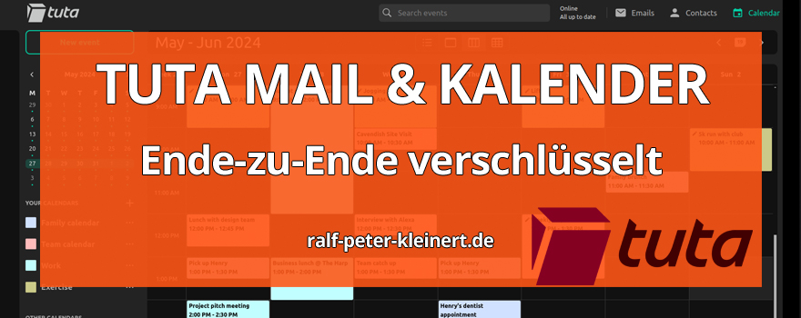
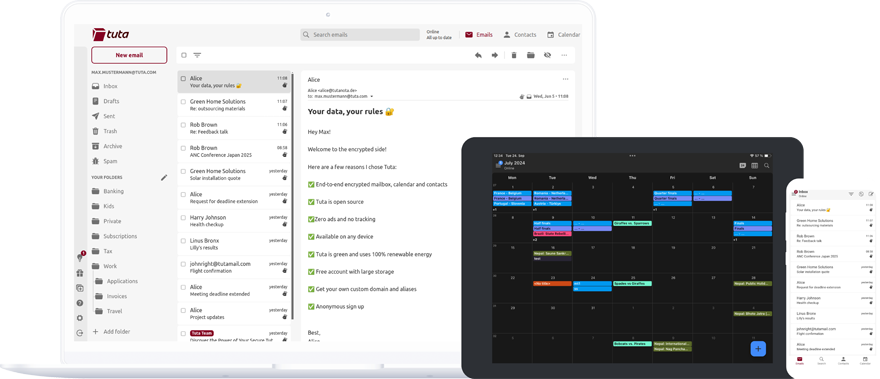

Inhalte des Artikels Tuta Sicherheits-Mail und Kalender
Als erstes möchte ich Ihnen einen Dienst vorstellen, den ich selbst im sogenannten Unlimited-Abo nutze: Tuta. Dieser Dienst bietet mir nicht nur quantensicher verschlüsselte E-Mails, sondern auch einen Kalender, der bislang als unknackbar gilt. Warum habe ich mich für diesen Dienst entschieden? Ganz einfach, weil ich nicht möchte, dass irgendjemand meine E-Mails liest, wie es bei Diensten wie Outlook.com der Fall sein könnte. Ich will auch auf keinen Fall, dass irgendjemand weiß, mit wem ich mich wann und wo treffe – und schon gar nicht, wann ich einen Termin beim Arzt habe. Das sind Informationen, die niemanden etwas angehen, und genau deshalb nutze ich Tuta: Damit meine privaten Angelegenheiten auch privat bleiben.
Tuta bietet mir ein hohes Maß an Sicherheit und Privatsphäre, (Ich habe keine Affiliate Partnerschaft mit Tuta - ich bekomme also keine Provisionen) das ich bei vielen anderen Diensten vermisse. Es wird von einem kleinen, engagierten Team aus Deutschland betrieben, das sich voll und ganz dem Datenschutz verschrieben hat. Was diesen Dienst besonders macht, ist die Ende-zu-Ende-Verschlüsselung, die automatisch bei jeder Nachricht greift. Das bedeutet, dass nur ich und der Empfänger die Inhalte der E-Mail lesen können – nicht einmal Tuta selbst hat Zugriff auf den Inhalt meiner Mails. Die E-Mails werden bereits auf meinem Gerät verschlüsselt und erst beim Empfänger wieder entschlüsselt. Das verschafft mir ein gutes Gefühl, denn so weiß ich, dass meine Kommunikation geschützt ist.
Auch der Kalender von Tuta ist für mich ein wichtiger Grund, diesen Dienst zu nutzen. In einer Zeit, in der Daten überall gesammelt und ausgewertet werden, will ich nicht, dass irgendjemand weiß, wann ich einen Arzttermin habe oder mit wem ich mich treffe. Diese Informationen sind persönlich und sollten nicht in die falschen Hände geraten. Genau hier bietet Tuta den entscheidenden Vorteil: Der gesamte Kalender ist ebenfalls Ende-zu-Ende-verschlüsselt, was bedeutet, dass meine Termine nur für mich sichtbar sind. Keine Tracking-Tools, keine Analyse durch Dritte – meine Zeitpläne gehören mir allein.
Ein weiterer Aspekt, der mir an Tuta gefällt, ist die Tatsache, dass es werbefrei ist. Viele andere Anbieter finanzieren ihre Dienste durch Werbung, die auf den Daten der Nutzer basiert. Das bedeutet, dass sie permanent versuchen, herauszufinden, wer Sie sind, was Sie interessiert und was Sie als Nächstes kaufen könnten. Bei Tuta passiert das nicht. Der Dienst verfolgt keine Ihrer Aktivitäten und verkauft keine Ihrer Daten an Werbetreibende. Das macht den Unterschied aus – denn hier geht es wirklich darum, Ihre Privatsphäre zu schützen und nicht darum, Geld mit Ihren Informationen zu verdienen.
Ich habe mir den Unlimited-Plan zugelegt, weil ich dadurch nicht nur mehr Speicherplatz erhalte, sondern auch weitere Funktionen, die mir wichtig sind, wie die Möglichkeit, meine eigene Domain zu verwenden. Aber egal, ob Sie sich für die kostenlose oder eine der kostenpflichtigen Versionen entscheiden – Tuta bietet Ihnen in jeder Variante die gleiche hohe Sicherheit. Und das ist in der heutigen Zeit ein echter Mehrwert.
Natürlich ist Tuta nicht der größte Anbieter, und vielleicht ist es nicht so bekannt wie andere E-Mail-Dienste. Aber genau das sehe ich als Vorteil. Es wird von einem Team betrieben, das sich nicht dem Druck großer Konzerne unterwerfen muss und stattdessen einen klaren Fokus auf Sicherheit und Datenschutz hat. Der Sitz des Unternehmens in Deutschland unterliegt zudem den strengen europäischen Datenschutzgesetzen, was mir zusätzliche Sicherheit gibt.
Am Ende des Tages geht es mir darum, die Kontrolle über meine Daten zu behalten. Ich möchte nicht, dass mein E-Mail-Provider oder mein Kalenderdienst mehr über mein Leben weiß als nötig. Und bei Tuta habe ich das Gefühl, dass genau das möglich ist. Es ist ein Dienst, dem ich vertraue, weil er transparent ist und weil er die Privatsphäre seiner Nutzer an erste Stelle setzt. Wenn Sie also auf der Suche nach einem E-Mail-Dienst sind, der Ihre Daten wirklich schützt, dann ist Tuta auf jeden Fall eine Überlegung wert. Es ist nicht nur ein technisches Tool – es ist eine bewusste Entscheidung für mehr Sicherheit und Privatsphäre in Ihrem digitalen Alltag.

Tuta, der verschlüsselte E-Mail- und Kalenderdienst, den ich im sogenannten Unlimited-Abo nutze, hat eine finanzielle Unterstützung von der deutschen Regierung erhalten. Im Rahmen des Förderprogramms "KMU-innovativ" wurden Tuta 1,5 Millionen Euro zur Verfügung gestellt. Und glauben Sie mal nicht, dass die Regierung einfach so eine solche Summe auf den Tisch legt, wenn das Konzept nicht Hand und Fuß hat. Diese Art von Förderung zeigt deutlich, dass die Technologie, die Tuta entwickelt, zukunftsweisend ist und das Vertrauen der Regierung genießt. Das Projekt, das durch diese Mittel unterstützt wird, trägt den Namen "PQDrive" und zielt darauf ab, eine post-quanten-sichere Cloud-Lösung zu entwickeln. Diese wird dazu beitragen, auch in einer Zukunft mit Quantencomputern, die klassische Verschlüsselungen brechen könnten, die Sicherheit Ihrer Daten zu gewährleisten.
Das Projekt wird in Zusammenarbeit mit der Universität Wuppertal entwickelt und soll dafür sorgen, dass die Verschlüsselungstechnologien von Tuta auch den zukünftigen Bedrohungen standhalten. Die Förderung verdeutlicht nicht nur die Bedeutung von Tutas Arbeit, sondern auch das Engagement der deutschen Regierung, Innovationen im Bereich der IT-Sicherheit zu fördern. Mit dieser Technologie wird Tuta sicherstellen, dass Ihre E-Mails und Kalendereinträge nicht nur heute, sondern auch in der Zukunft bestens geschützt sind.
Aber das ist ein Irrtum, und genau deshalb habe ich es mir zur Aufgabe gemacht, aufzuklären. IT-Sicherheit geht uns alle etwas an, ob wir nun ein großes Unternehmen leiten oder einfach nur zu Hause sicher im Internet surfen wollen. Mit den richtigen Maßnahmen können wir uns schützen – aber dazu müssen wir erst verstehen, womit wir es zu tun haben. Und das möchte ich Ihnen zeigen.
Ich vertraue Tuta natürlich nicht blind. Vertrauen ist gut, aber Kontrolle ist besser. Deshalb informiere ich mich regelmäßig über die Entwicklungen und die Sicherheitsstandards, die Tuta anbietet. Genau das sollten Sie auch tun. Bleiben Sie stets am Ball und prüfen Sie, ob die Versprechen eines Dienstes weiterhin eingehalten werden. Nur so behalten Sie die Kontrolle über Ihre Daten und Ihre Sicherheit.
Was mir bei Tuta jedoch ein gewisses Maß an Vertrauen gibt, ist die Tatsache, dass der Staat selbst eine bedeutende Investition getätigt hat. Dass die deutsche Regierung bereit ist, 1,5 Millionen Euro in die Weiterentwicklung der post-quanten-sicheren Verschlüsselung zu stecken, zeigt mir, dass Tuta nicht einfach tun und lassen kann, was es will – ohne dabei Rechenschaft abzulegen. Es gibt klare Standards, die erfüllt werden müssen, und es besteht ein gewisser Druck, sich an diese zu halten. Es ist ein Unterschied, ob ein Unternehmen von einem privaten Investor finanziert wird, der vielleicht eher auf Profit aus ist, oder ob staatliche Fördergelder involviert sind, die an hohe Sicherheits- und Transparenzanforderungen geknüpft sind.
Das gibt mir ein viel besseres Gefühl, als wenn beispielsweise Elon Musk oder ein anderer Tech-Milliardär in Tuta investiert hätte. Da ist man doch schneller geneigt, zu hinterfragen, wie die Prioritäten gesetzt werden und ob der Datenschutz wirklich an erster Stelle steht. Wenn ein Unternehmen staatliche Gelder erhält, muss es klaren Richtlinien folgen, die nicht so einfach ignoriert werden können. Und das lässt mich nachts deutlich ruhiger schlafen.
Empfohlene Artikel zu Computer-Sicherheit
Hier habe ich weitere wichtige Artikel aus dem Bereich IT-Sicherheit und Cyber-Security für sie zusammengestellt.
Sicherheit in der IT für Privatpersonen
Tuta verwendet für die post-quantensichere Verschlüsselung eine sogenannte Hybrid-Verschlüsselung. Dabei werden klassische Verschlüsselungsalgorithmen wie RSA mit neuen, zukunftssicheren Algorithmen kombiniert, die auch den enormen Rechenkapazitäten von Quantencomputern standhalten sollen. Das finde ich besonders spannend, weil man für die Entwicklung solcher Technologien richtig kluge Köpfe benötigt. Hier reicht es bei weitem nicht, ein paar Standardlösungen anzuwenden oder den „Drei-Satz“ in der Verschlüsselung anzusetzen – das ist hochkomplexe Mathematik, die in Zusammenarbeit mit Universitäten wie der Universität Wuppertal entwickelt wird.
Tuta setzt hierbei auf Algorithmen wie Kyber und Dilithium, die von der National Institute of Standards and Technology (NIST) als künftige Standards für post-quantensichere Verschlüsselung ausgewählt wurden. Das bedeutet, dass diese Algorithmen nicht nur sicher für aktuelle Bedrohungen sind, sondern auch für zukünftige Technologien, die herkömmliche Verschlüsselung knacken könnten. Besonders gefällt mir der hybride Ansatz: Selbst wenn in Zukunft eine dieser neuen Verschlüsselungsmethoden geknackt werden sollte, bleibt die klassische Verschlüsselung als Sicherheitsnetz bestehen. Es ist faszinierend, wie Tuta hier vorausdenkt und Lösungen für Probleme entwickelt, die uns vielleicht erst in 10 bis 20 Jahren betreffen könnten.
Das ist nicht einfach nur ein „Nice-to-have“, sondern eine ernsthafte und zukunftssichere Investition in die Sicherheit unserer digitalen Kommunikation. Und wie gesagt: Für so etwas braucht es richtige Fachleute, die sich mit Kryptographie und den Risiken der Zukunft auseinandersetzen – da ist mit einem simplen 3-Satz wirklich nichts getan.
Quellen:
https://tuta.com/blog/pqmail-update
https://news.itsfoss.com/tutanota-post-quantum-secure-cloud/
https://tuta.com/blog/german-government-publishes-encryption-law
Kostenlose IT-Sicherheits-Bücher & Information via Newsletter
Bleiben Sie informiert, wann es meine Bücher kostenlos in einer Aktion gibt: Mit meinem Newsletter erfahren Sie viermal im Jahr von Aktionen auf Amazon und anderen Plattformen, bei denen meine IT-Sicherheits-Bücher gratis erhältlich sind. Sie verpassen keine Gelegenheit und erhalten zusätzlich hilfreiche Tipps zur IT-Sicherheit. Der Newsletter ist kostenlos und unverbindlich – einfach abonnieren und profitieren!
Ich versuche, Ihnen diesen sehr technischen und komplexen Ansatz verständlich zu erklären. Die Post-Quanten-Verschlüsselung ist eine Art „Zukunftssicherung“ für unsere Daten. Der Grundgedanke ist folgender: Heutige Verschlüsselungen, die unsere E-Mails, Daten und Banktransaktionen schützen, basieren auf mathematischen Problemen, die selbst für die stärksten Computer extrem schwierig zu lösen sind. Aber – und hier kommt der springende Punkt – Quantencomputer, die gerade in der Entwicklung sind, werden diese mathematischen Rätsel eines Tages viel schneller lösen können. Das bedeutet, dass die heutigen Verschlüsselungssysteme irgendwann nicht mehr sicher sein könnten.
Stellen Sie sich das so vor: Heute verschließen wir unsere Daten in einem Safe mit einem sehr komplizierten Schloss, das nur mit einem speziellen Schlüssel geöffnet werden kann. Für normale Computer dauert es unglaublich lange, dieses Schloss zu knacken. Aber ein Quantencomputer wäre in der Lage, dieses Schloss in Sekundenschnelle zu öffnen. Genau hier setzt die Post-Quanten-Verschlüsselung an – sie soll sicherstellen, dass unsere Daten auch in einer Welt mit Quantencomputern sicher bleiben.
Ein einfaches Beispiel: Nehmen wir an, Sie verschicken einen Brief und wollen, dass nur der Empfänger ihn lesen kann. Die herkömmliche Verschlüsselung ist wie ein Zahlenschloss am Brief, das nur der Empfänger mit dem richtigen Code öffnen kann. Ein Quantencomputer hingegen könnte alle möglichen Kombinationen so schnell ausprobieren, dass er den Code im Handumdrehen knacken könnte. Post-Quanten-Verschlüsselung wäre wie ein Zahlenschloss, das auch der schnellste Computer nicht knacken kann – selbst wenn er es versucht.
Tuta verwendet eine spezielle Art der Verschlüsselung, die sowohl klassische als auch post-quanten-sichere Algorithmen kombiniert. Das bedeutet, dass Ihre Daten heute und in Zukunft geschützt sind, selbst wenn Quantencomputer Realität werden.
Nehmen wir einen modernen Computer, zum Beispiel einen Ryzen 9 Prozessor zusammen mit einer Nvidia GTX 4090. Solch eine Maschine ist äußerst leistungsstark und könnte einen RSA-2048-Bit-Schlüssel in etwa 300 Billionen Jahren knacken – das ist unglaublich viel Zeit, selbst für eine so fortschrittliche Hardware. Der Grund dafür liegt in der mathematischen Komplexität des Problems: RSA-Verschlüsselung basiert auf der Faktorisierung extrem großer Primzahlen, was selbst für leistungsfähige Computer enorm aufwendig ist.
Jetzt stellen Sie sich vor, wir haben einen voll funktionsfähigen Quantencomputer zur Verfügung. Ein solcher Computer könnte dieselbe RSA-2048-Bit-Verschlüsselung innerhalb von wenigen Stunden oder Tagen knacken. Der enorme Vorteil der Quantencomputer liegt darin, dass sie in der Lage sind, viele Berechnungen gleichzeitig durchzuführen, was mit klassischen Computern nicht möglich ist. Sie arbeiten nicht mehr „Schritt für Schritt“, sondern können viele mögliche Lösungen parallel berechnen.
Das zeigt den entscheidenden Unterschied: Was heute mit den besten klassischen Computern unvorstellbar lange dauert, könnte mit Quantencomputern in absehbarer Zeit machbar werden. Genau deshalb ist Post-Quanten-Verschlüsselung so wichtig – sie stellt sicher, dass auch solche zukünftigen Superrechner unsere Daten nicht einfach entschlüsseln können.
Nehmen wir jetzt mal den aktuell stärksten Linux-Supercomputer namens Frontier. Ich als absoluter Nerd muss sagen, das Teil ist so "Fett Alter", einfach unglaublich krass – was würde ich dafür geben, mal an diesem Teil zu sitzen! Ok, zurück zum Thema. Dieser Supercomputer kann über 1,1 ExaFLOPS (das sind 1,1 Trillionen Berechnungen pro Sekunde) ausführen und ist damit etwa 1 Million Mal stärker als der Ryzen 9. Ein RSA-2048-Schlüssel würde auf Frontier immer noch etwa 300 Millionen Jahre brauchen, um geknackt zu werden.
Dieser Supercomputer, *Frontier*, hat sage und schreibe 8.730.112 Prozessoren, die gemeinsam unglaubliche Rechenleistungen erbringen. Dazu kommen rund 700 Petabyte (das sind 700.000 Terabyte) an Speicherplatz – eine Zahl, die sich kaum fassen lässt! Aber das ist noch nicht alles: *Frontier* verbraucht unfassbare 21 Megawatt Strom, was in etwa dem Energiebedarf einer mittelgroßen Stadt entspricht. Skynet aus *Terminator*? Skynet ist ein Gameboy! Solche Rechenmonster zeigen, wie weit wir technisch gekommen sind – aber auch, dass selbst diese geballte Power beim Knacken eines RSA-2048-Schlüssels an ihre Grenzen stößt.
Ein RSA-2048-Schlüssel würde auf Frontier immer noch etwa 300 Millionen Jahre brauchen, um geknackt zu werden. Da kann man mal sehen, dass der Leistungsunterschied vom Ryzen 9 bis zum Frontier in diesem Kontext fast nichts bedeutet, wenn es um solche gigantischen Zahlen geht.Warum bleiben die 300 Millionen Jahre gleich, obwohl Frontier so viel leistungsstärker ist? Das liegt an der Natur des Problems. Die Faktorisierung von großen Primzahlen, wie sie bei RSA-Verschlüsselung verwendet wird, ist extrem schwierig für herkömmliche Computer – egal wie leistungsstark sie sind. Selbst der leistungsfähigste Supercomputer kann nur so schnell arbeiten, weil er viele Berechnungen gleichzeitig ausführt, aber das Grundproblem der Faktorisierung bleibt bestehen und lässt sich nicht einfacher lösen. Die schiere Anzahl möglicher Kombinationen und Berechnungen, die durchprobiert werden müssen, ist einfach gigantisch. Quantencomputer hingegen nutzen völlig andere Rechenmethoden, die es ihnen ermöglichen, diese enormen Zahlenmengen viel effizienter zu verarbeiten.
Quantencomputer werden in Zukunft eine so unfassbare Rechenpower haben, dass alles, was wir heute verschlüsseln, geknackt werden könnte. Stellen Sie sich das vor: Jede verschlüsselte E-Mail, jede Banktransaktion, jedes Geheimnis, das wir heute sicher verwahrt wissen, könnte durch einen Quantencomputer in Sekunden oder Minuten offengelegt werden. Deshalb ist es absolut entscheidend, dass Unternehmen wie Tuta in dieser Hinsicht weiter vorankommen.
Und ganz ehrlich, in Anbetracht dessen, was auf dem Spiel steht, sind 1,5 Millionen Euro Förderung ein Witz! Das klingt vielleicht nach viel Geld, aber um Ihnen eine Vorstellung zu geben: Frontier, der stärkste Supercomputer der Welt, verbraucht mit seinen 21 Megawatt Strom diese 1,5 Millionen Euro bei einem Strompreis von 30 Cent pro Kilowattstunde in gerade mal 15 Minuten. Das ist lächerlich, wenn man darüber nachdenkt, welche Gefahr von einem zukünftigen Quantencomputer ausgeht. Wenn Quantencomputer so weit sind, könnten sie die heutige Verschlüsselungstechnologie binnen kürzester Zeit überflüssig machen.
Das zeigt den entscheidenden Unterschied: Was heute mit den besten klassischen Computern unvorstellbar lange dauert, könnte mit Quantencomputern in absehbarer Zeit machbar werden. Genau deshalb ist Post-Quanten-Verschlüsselung so wichtig – sie stellt sicher, dass auch solche zukünftigen Superrechner unsere Daten nicht einfach entschlüsseln können.
Was passiert, wenn der erste Quantenhack gelingt? Dann wird das Geschrei groß sein – denn plötzlich gibt es keine Geheimnisse mehr auf der Welt. E-Mails, Verträge, Gesundheitsdaten – alles wäre plötzlich offen zugänglich. Das ist keine Science-Fiction, sondern eine reale Bedrohung, die auf uns zukommt. Deshalb sage ich ganz klar: Tuta und andere Unternehmen, die an Post-Quanten-Verschlüsselung arbeiten, brauchen massiv mehr Unterstützung. Denn nur wenn Unternehmen wie Tuta in der Lage sind, rechtzeitig Lösungen zu entwickeln, haben wir eine Chance, unsere digitalen Geheimnisse in der Zukunft zu schützen. Wenn nicht, dann wird es zu spät sein – und der erste Quantenhack könnte alles verändern.
Für jeden überprüfbare Sicherheit – das ist meiner Meinung nach eines der stärksten Merkmale von Tuta (ehemals Tutanota). Ein entscheidender Punkt dabei ist, dass der gesamte Client-Code von Tuta Open Source ist. Alles, was Sie auf Ihrem Computer oder Smartphone installieren, ist für jedermann einsehbar und überprüfbar. Und das ist extrem wichtig. Warum? Weil dadurch jeder – sei es ein unabhängiger Entwickler, ein Sicherheitsunternehmen oder einfach jemand mit technischem Know-how – den Code unter die Lupe nehmen kann. Jeder Fehler, jede Schwachstelle, jede mögliche Hintertür in der Software würde auffallen. Solche Transparenz schafft Vertrauen.
Was mich dabei besonders überzeugt, ist, dass Tuta damit zeigt: „Wir haben nichts zu verbergen.“ Andere Unternehmen halten sich in dieser Hinsicht oft bedeckt. Sie bieten geschlossene Systeme, bei denen niemand genau weiß, was im Hintergrund passiert. Da bleibt immer die Frage: Gibt es Sicherheitslücken, die nicht entdeckt werden? Wie werden meine Daten wirklich verarbeitet? Bei Tuta habe ich die Gewissheit, dass der Quellcode von der globalen Entwickler-Community auf Herz und Nieren geprüft wird. Diese offene und überprüfbare Sicherheitsstruktur ist für mich einer der Hauptgründe, warum ich Tuta vertraue. Wer etwas zu verbergen hat, versteckt den Code – wer Vertrauen schaffen will, zeigt ihn.
Das gibt mir als Nutzer die Kontrolle zurück. Ich muss nicht einfach blind vertrauen, sondern kann mich auf echte, nachprüfbare Sicherheit verlassen.
Warum Tuta die Zukunft der verschlüsselten Kommunikation ist – und warum es mehr Förderung braucht.
Stellen Sie sich eine Welt vor, in der Quantencomputer in der Lage sind, jede heute existierende Verschlüsselung innerhalb von Minuten zu knacken. Alles, was wir heute für sicher halten – von persönlichen E-Mails über Bankdaten bis hin zu Staatsgeheimnissen – könnte mit einem einfachen Rechenprozess offengelegt werden. Das mag nach Science-Fiction klingen, aber diese Technologie kommt schneller auf uns zu, als wir denken. Und genau hier kommt Tuta ins Spiel, das Unternehmen, das bereits an der Zukunft arbeitet, um sicherzustellen, dass unsere Geheimnisse auch im Zeitalter der Quantencomputer geschützt bleiben.
Post-Quanten-Verschlüsselung: Was ist das?
Aktuell basiert die meiste Verschlüsselung auf mathematischen Problemen, die selbst für die stärksten herkömmlichen Computer extrem schwer zu lösen sind. Aber Quantencomputer arbeiten völlig anders und werden in der Lage sein, diese Probleme in atemberaubender Geschwindigkeit zu lösen. Genau deshalb brauchen wir Post-Quanten-Verschlüsselung. Diese Technologien, wie sie Tuta entwickelt, sind darauf ausgelegt, auch den Angriffen von Quantencomputern standzuhalten.
Tuta arbeitet mit einer sogenannten Hybrid-Verschlüsselung, bei der sowohl klassische als auch post-quanten-sichere Algorithmen kombiniert werden, um den höchstmöglichen Schutz zu gewährleisten. Dies stellt sicher, dass selbst in einer Welt mit Quantencomputern unsere Daten sicher bleiben.
Warum 1,5 Millionen Euro Förderung nicht genug sind
Tuta hat eine Förderung in Höhe von 1,5 Millionen Euro durch das deutsche Förderprogramm "KMU-innovativ" erhalten. Das klingt erst einmal nach einer stolzen Summe, aber in Wahrheit ist es nur ein Tropfen auf den heißen Stein. Um Ihnen eine Vorstellung zu geben: Der aktuell stärkste Supercomputer der Welt, Frontier, verbraucht mit seinen 21 Megawatt Strom diese 1,5 Millionen Euro in gerade mal 15 Minuten. Wenn wir wirklich verhindern wollen, dass Quantencomputer eines Tages all unsere Daten gefährden, müssen Unternehmen wie Tuta deutlich mehr Unterstützung erhalten.
Der Ernst der Lage: Was passiert, wenn der erste Quantenhack gelingt?
Stellen Sie sich vor, der erste Quantenhack wird Realität. Plötzlich sind all unsere persönlichen, geschäftlichen und staatlichen Geheimnisse nicht mehr sicher. E-Mails, Verträge, Bankdaten – alles könnte offengelegt werden. Wenn Unternehmen wie Tuta nicht rechtzeitig Lösungen entwickeln, stehen wir vor einer digitalen Katastrophe. Es wäre das Ende der Privatsphäre, wie wir sie kennen.
Tuta hat bereits bahnbrechende Fortschritte gemacht, indem es mit innovativen post-quanten-sicheren Algorithmen wie Kyber und Dilithium arbeitet, die vom National Institute of Standards and Technology (NIST) als zukünftige Standards ausgewählt wurden. Diese Technologien sind der Schlüssel, um unsere digitale Welt sicher zu halten – nicht nur heute, sondern auch in der Zukunft.
Was bedeutet das für Sie?
Die meisten von uns sind an kostenlose Dienste wie Gmail, Outlook oder WhatsApp gewöhnt, bei denen unsere Daten im Gegenzug für Bequemlichkeit gesammelt und genutzt werden. Aber in einer Welt, in der Quantencomputer Realität werden, könnte dieser Datentausch fatale Folgen haben. Die Verschlüsselung, auf die wir uns verlassen, wird veraltet sein – und nur Dienste wie Tuta, die bereits an zukunftssicherer Verschlüsselung arbeiten, werden in der Lage sein, Ihre Daten zu schützen.
Tuta bietet schon jetzt hochverschlüsselte E-Mails und Kalenderdienste an, die nicht nur Ihre Kommunikation, sondern auch Ihre Terminplanung schützen. Diese Technologie ist nicht nur etwas für Technikfreaks – sie ist ein Muss für jeden, der sicherstellen möchte, dass seine privaten und geschäftlichen Daten auch in der Zukunft geschützt sind.
Warum wir mehr tun müssen
Unternehmen wie Tuta sind die Frontlinie im Kampf gegen die Bedrohungen, die von Quantencomputern ausgehen. Aber damit sie diese Aufgabe bewältigen können, brauchen sie mehr Unterstützung. Wenn Quantencomputer Realität werden, könnte der Schaden, der durch ungeschützte Daten entsteht, unermesslich sein. Jetzt ist die Zeit zu handeln – bevor es zu spät ist.
Der erste Quantenhack wird die Welt verändern – die Frage ist nur, ob wir darauf vorbereitet sind. Tuta tut alles, um sicherzustellen, dass wir es sind. Aber dafür braucht es mehr als nur gute Absichten. Es braucht echte Investitionen in die Sicherheit der Zukunft.
Schützen Sie Ihre Daten – heute und morgen – mit Tuta und der Verschlüsselung
Über den Autor: Ralf-Peter Kleinert
Über 30 Jahre Erfahrung in der IT legen meinen Fokus auf die Computer- und IT-Sicherheit. Auf meiner Website biete ich detaillierte Informationen zu aktuellen IT-Themen. Mein Ziel ist es, komplexe Konzepte verständlich zu vermitteln und meine Leserinnen und Leser für die Herausforderungen und Lösungen in der IT-Sicherheit zu sensibilisieren.
Aktualisiert: Ralf-Peter Kleinert 15.10.2024